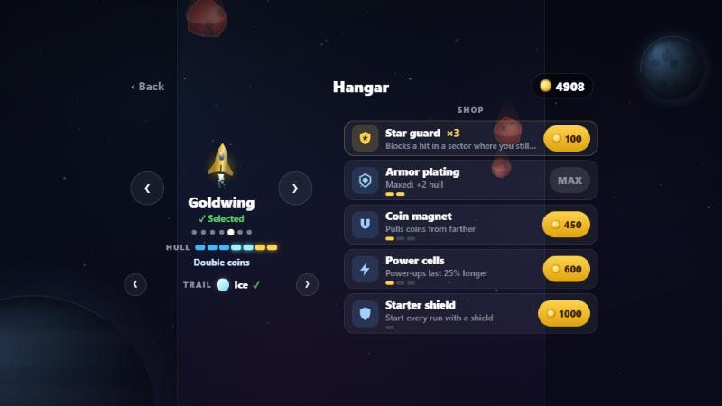
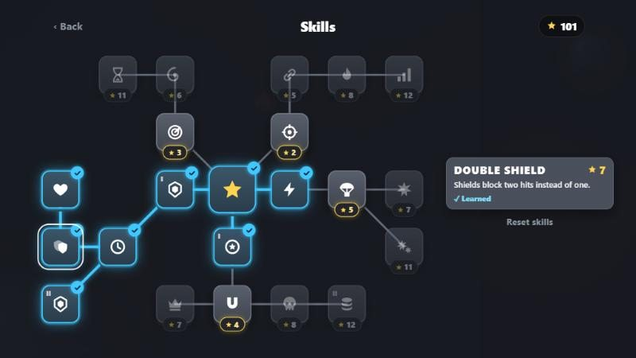

Home › Ships, upgrades and skills
Ships, upgrades and skills
Coins and stars are how you get stronger in Meteor Swerve. Coins buy ships, trails and upgrades in the hangar, and every star you earn is a point to spend in the skill tree. This guide covers all of it and suggests what to buy first.
The hangar
Open the Hangar from the main menu or from the map. On the left you can flip through the ships with the arrows, see each one's hull and perk, and choose an engine trail underneath. On the right is the shop with the upgrades and star guards. Anything you buy is yours for good, and you can switch between the ships and trails you own at any time.

Ships
There are seven ships. They differ in two ways: how many hull cells they have (how many hits they can take) and their perk, a special ability that is always on.
| Ship | Price | Hull | Perk |
|---|---|---|---|
| Comet | Free | 1 | None. The balanced starter ship. |
| Ember | 400 | 2 | +25% coins from everything you pick up. |
| Viper | 900 | 2 | A built-in coin magnet. |
| Nova | 1,800 | 3 | Power-ups last 50% longer. |
| Goldwing | 3,500 | 3 | Double coins. |
| Phantom | 6,000 | 4 | Survives one fatal hit in every run by phasing through it. |
| Starlight | 120 stars | 5 | Double coins, a built-in coin magnet and power-ups that last 50% longer. |
The Starlight can't be bought with coins. It joins your hangar automatically once you have collected 120 of the game's 144 stars, as a reward for replaying sectors to perfect them.
Each ship also has its own colours and engine flame, and the hull number above is before upgrades: the Armor plating upgrade and two skills each add more on top.
Which ship to buy first
The starter Comet has a single hull cell, which means one hit ends the run. That makes the first purchase an easy choice: the Ember costs only 400 coins, doubles your hull and earns a quarter more coins on every run. Most players can afford it after their first few sectors.
After that there are two good routes:
- The money route: save up for the Goldwing. Double coins pays for everything else faster, and with three hull cells it is sturdy enough for the middle worlds. If you like grazing rocks for combos, this is the ship for you.
- The survival route: if a boss is blocking your way, the Phantom is the toughest ship you can buy with coins, with four hull cells and a free save from one fatal hit per run. It earns normal coins, though, and costs 6,000, so it takes a while to afford.
The Viper and Nova sit in between. The Viper's magnet makes the 60% coin star much easier to get, and the Nova is a good fit if you build your skill tree around power-ups.
Upgrades
Upgrades in the shop apply to every ship you own, so they never go to waste when you change ships.
| Upgrade | Prices | Effect |
|---|---|---|
| Armor plating | 500, 2,000 | +1 hull on every ship per level, up to +2. |
| Coin magnet | 150, 450, 1,200 | Pulls in nearby coins. Each level reaches farther, and the last level outreaches the Viper's own magnet. |
| Power cells | 200, 600, 1,500 | Power-ups last 25% longer per level, up to +75%. |
| Starter shield | 1,000 | Every run begins with a shield already on. |
The first level of Armor plating (500 coins) is the best value in the game: an extra hull cell on every ship, for good. The first level of Coin magnet is cheap at 150 coins and quickly pays for itself. Leave the most expensive levels until you have the ship you want.
Star guards
A star guard protects the no-hit star. When you start a sector whose no-hit star you haven't won yet, one guard comes along and blocks the first hit, and a hit blocked by a guard doesn't count against the star. Guards are only used in sectors where they matter, so they are never wasted on a sector you have already perfected.
- Buy them in the shop for 100 coins each. You can hold up to 99.
- Days 2, 4 and 6 of the daily bonus give guards for free.
- Finishing all three daily missions adds one more.
Engine trails
Trails change the colour of the flame and the particles behind your ship. They are purely for looks, they work with every ship, and other players see your trail in online races.
| Trail | How to get it |
|---|---|
| Standard | Free. Uses the ship's own flame colour. |
| Fire | 1,500 coins |
| Ice | 2,500 coins |
| Toxic | 4,000 coins |
| Neon | 6,000 coins |
| Rainbow | 9,000 coins |
| Gold | 15,000 coins. Sparkles. |
| Stardust | Collect all 144 stars. Sparkles. |
| Frost | Catch 100 snowflakes in the December winter event. Never sold. |
The star skill tree
Open Skills from the menu or the map. Every star you have earned is one skill point. Skills cost from 2 to 16 points, and each one opens the skills next to it in its branch. The whole tree costs 144 points, exactly the number of stars in the game, so a player who collects every star can learn every skill.
Two things make the tree easy to experiment with. First, spent stars still count towards opening worlds and unlocking the Starlight and Stardust, so learning skills never holds you back. Second, resetting is free: press Reset skills twice and every point comes back to spend again.
Skills work in the campaign and in endless mode. They are switched off in online races and in the daily challenge, where every pilot flies on equal terms.

Armor branch
| Skill | Cost | Effect |
|---|---|---|
| Tough Plating | 2 | +1 hull on every ship. |
| Quick Recovery | 4 | After a hit, your ship stays safe 50% longer. |
| Double Shield | 7 | Shields block two hits instead of one. |
| Reinforced Hull | 10 | +1 more hull on every ship. |
| Last Stand | 16 | Once per run, a hit that would destroy your ship leaves it flying on its last bit of hull. |
Fortune branch
| Skill | Cost | Effect |
|---|---|---|
| Lucky Strike | 2 | +10% coins from everything you pick up. |
| Long Reach | 4 | Coins fly to your ship from farther away. |
| Mastery | 7 | Sectors where you have all three stars pay 30% more when you clear them. |
| Boss Bounty | 8 | Beating a boss pays 50% more coins. |
| Golden Touch | 12 | +15% more coins from everything you pick up. |
Power-up branch
| Skill | Cost | Effect |
|---|---|---|
| Long Fuse | 2 | Power-ups last 25% longer. |
| Supply Drops | 5 | Power-ups show up 25% more often. |
| Big Bang | 7 | Every rock a Blast destroys pays 2 coins instead of 1. |
| Blast Lover | 11 | Blast power-ups turn up twice as often. |
Close-call branch
| Skill | Cost | Effect |
|---|---|---|
| Steady Hands | 2 | Close calls count from a little farther away. |
| Chain Keeper | 5 | Close-call combos last one second longer. |
| Daredevil | 8 | Close calls pay double. |
| Combo Master | 12 | Close-call combos climb all the way to ×15. |
Radar branch
| Skill | Cost | Effect |
|---|---|---|
| Early Warning | 3 | Comets and lasers warn you a moment sooner. |
| Gravity Damper | 6 | Black holes pull your ship 40% less. |
| Calm Bosses | 11 | Bosses wait longer between their attacks. |
Skill plans
Because a reset is free, there is no wrong choice. Still, a few plans work well at different stages.
Your first stars
Start with Tough Plating (2) for an extra hull cell, then Lucky Strike (2) and Long Fuse (2). Six points give you more hull, more coins and longer power-ups, which helps everywhere.
Getting past a boss
Put everything into survival: Tough Plating, Quick Recovery and Reinforced Hull in the armor branch, and Calm Bosses in the radar branch for longer pauses between attacks. For the Singularity, add Gravity Damper. Reset afterwards if you want your coin skills back.
Farming coins
If you are good at close calls, the close-call branch is the strongest coin source in the game: Daredevil doubles every close call and Combo Master lifts the cap from ×10 to ×15. Pair it with the Goldwing and the fortune branch, and replay a sector you know well.
Hunting stars
For the coin star, a strong magnet helps most: Long Reach plus the Coin magnet upgrade, or the Viper. For the no-hit star, take Double Shield and Early Warning, and bring a few star guards.